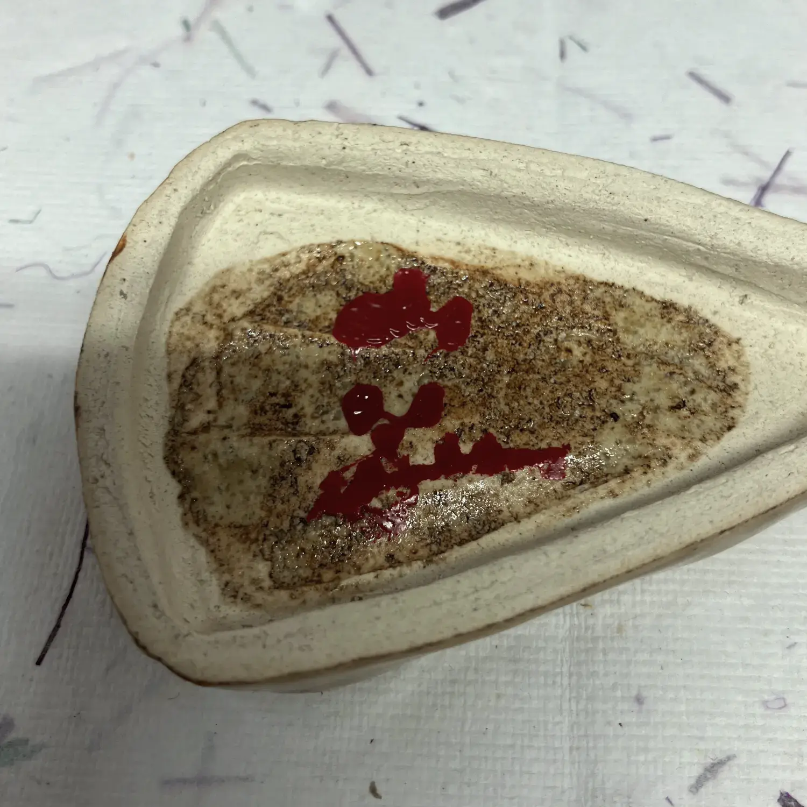
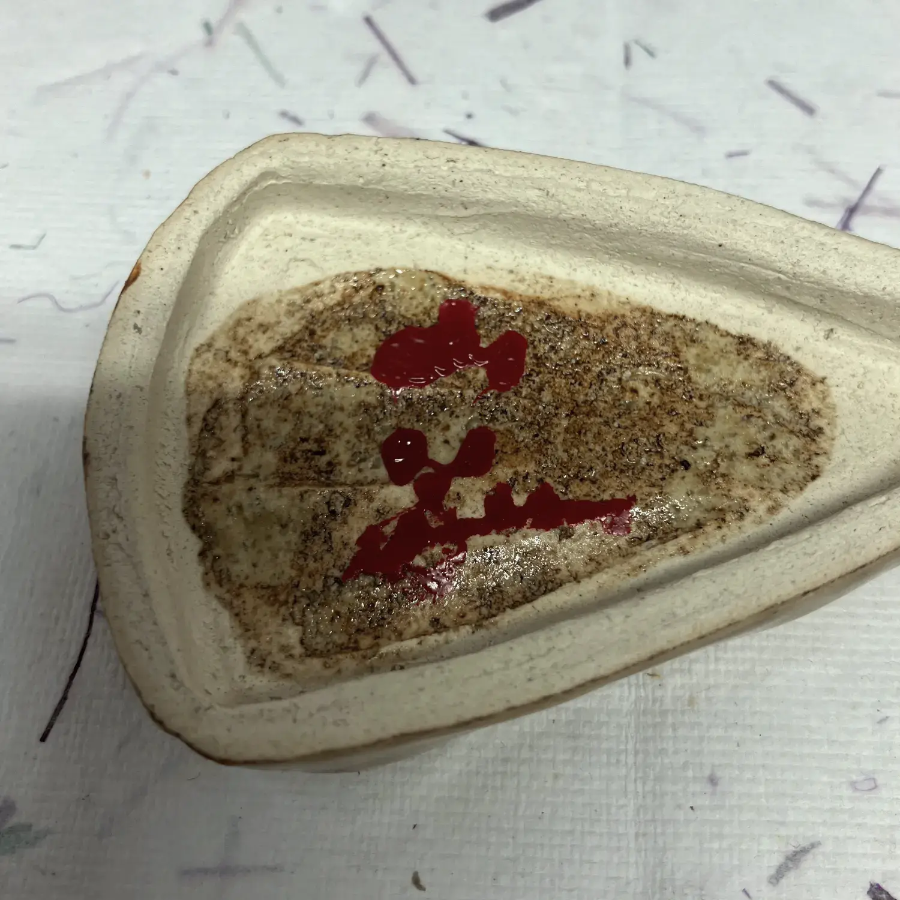
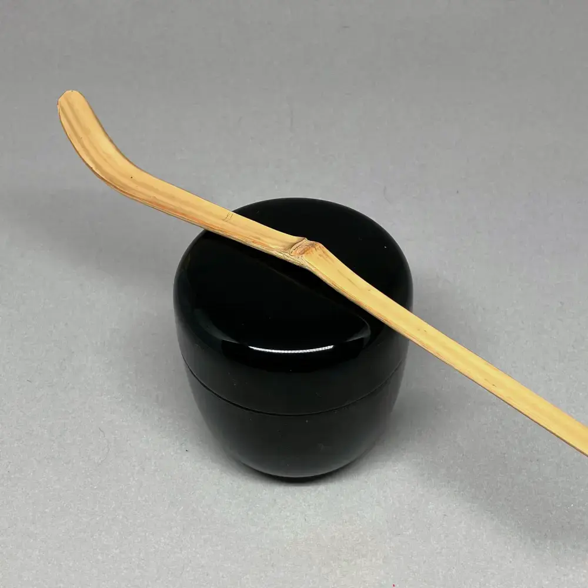
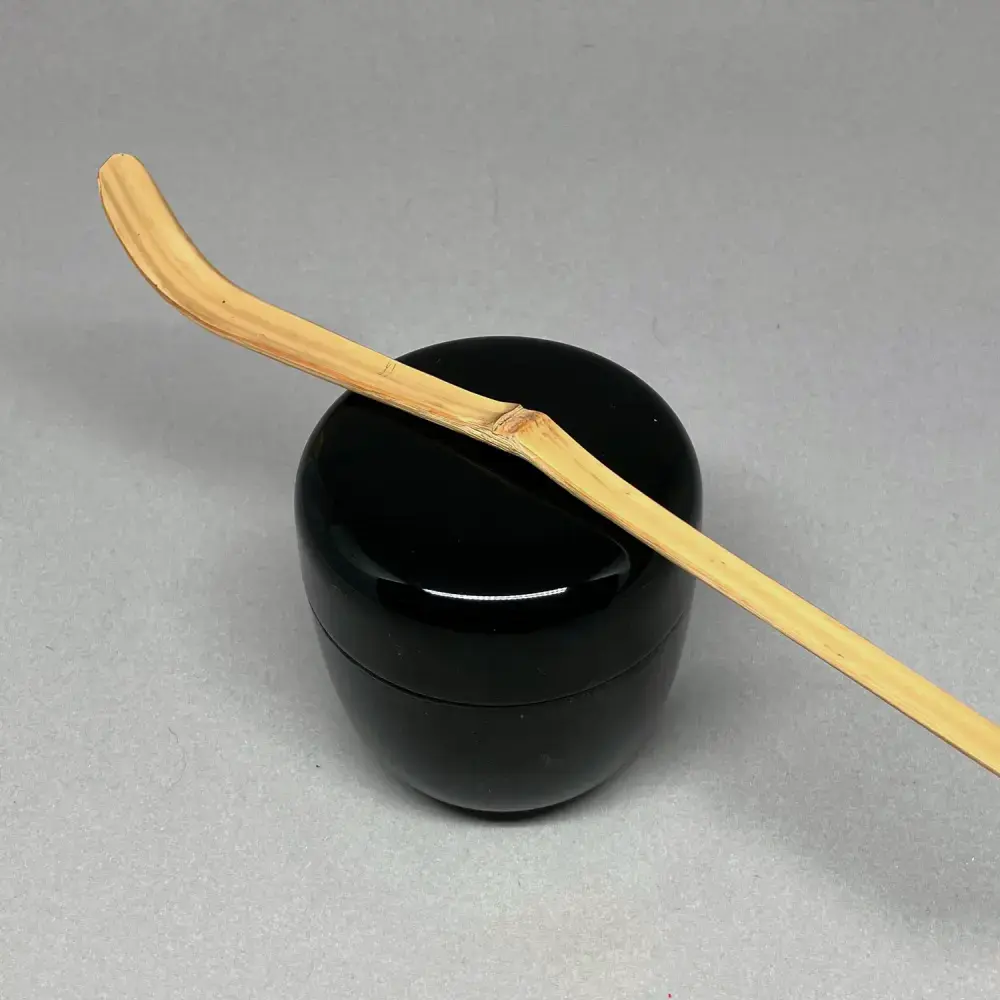

Ohne Selbstbewusstsein 「ä¸è˜ã€
von Wabei Yarita 80 CHF


Ohne Selbstbewusstsein「ä¸è˜ã€
von Wabei YaritaAls der Bodhidharma vom chinesischen Kaiser Wu eingeladen wurde, hoffte der Kaiser, etwas Weisheit von dem legendären Mönch zu erhalten. Als der Kaiser ihn jedoch fragte, wer er sei, lautete die Antwort ä¸è˜. Es schwingt aber auch die Bedeutung von Es ist mir egal mit, und war somit wahrscheinlich nicht das, was der Kaiser hören wollte. Es zeigt jedoch die raue, kompromisslose Haltung des frühen Buddhismus, die auch dieser Räucherwerkbehälter einfängt.
Der Künstler verstarb im Jahr 2014, nachdem er mehrere Auszeichnungen erhalten und mehrere Ausstellungen abgehalten hatte. Wird mit der Schachtel des Künstlers geliefert.
Verkauft wird ausschließlich, was oben beschrieben ist; allfällige übrige Gegenstände auf den Bildern dienen lediglich dem Größenvergleich und der Veranschaulichung.
Erstehen (zum Preis von 80 CHF) Fenster Schließen
Schale mit Kaki-Glasur 「柿釉天目茶碗」
von Koie Tsuyoshi 140 CHF


Schale mit Kaki-Glasur「柿釉天目茶碗」
von Koie TsuyoshiDiese 天目-Schale hat eine sehr helle, rote Persimmon-farbene Glasur und einen Metallrand, was sie besonders für das 台天目-Verfahren geeignet macht. Ihre Farbkontraste passen auch gut zu dem schwarzen 台, das üblicherweise während der Praxis verwendet wird. Wird mit der Künstlerbox geliefert.
👾: Dieser Text wurde maschinell aus dem Englischen übersetzt. Bei Unstimmigkeiten konsultieren Sie bitte die englische Seite.
Verkauft wird ausschließlich, was oben beschrieben ist; allfällige übrige Gegenstände auf den Bildern dienen lediglich dem Größenvergleich und der Veranschaulichung.
Erstehen (zum Preis von 140 CHF) Fenster SchließenDas Jade-Schiff 「玉船」
Hersteller unbekannt 120 CHF

Das Jade-Schiff「玉船」
```de
Der Name 玉船 wird in der chinesischen Dichtung verwendet und beschreibt ein Gefäß zum Servieren von Reiswein in einem höfischen Umfeld. Ein bestimmtes Gedicht kommt mir dabei in den Sinn: Ich sitze am roten Kamin und gieße aus dem Jadeschiff einen goldenen Becher ein. Es passt zu diesem ganz besonderen Teelöffel, mit seinen drei Knoten und intensiven Form.
Ich habe ihn mit einem Tuch namens 阿è˜é™€é–“é“ kombiniert, wobei die ersten drei Zeichen für die Niederlande stehen. Obwohl die Niederländer erst 1600 erstmals in Japan ankamen, waren ihre Waren bereits vor ihnen durch die Portugiesen nach Japan gelangt, die das Wort Hollanda verwendeten, um sie zu bezeichnen. Daher lautet das japanische Wort noch heute: オランダ oder 阿è˜é™€.
Beinhaltet das 古帛紗 und den Teelöffel, beide in ihrer eigenen Pappschachtel.
```
Verkauft wird ausschließlich, was oben beschrieben ist; allfällige übrige Gegenstände auf den Bildern dienen lediglich dem Größenvergleich und der Veranschaulichung.
Erstehen (zum Preis von 120 CHF) Fenster Schließen
Laute 「琵琶」
von Kato Shuntei 80 CHF 



Laute「琵琶」
von Kato ShunteiDie 琵琶 ist ein japanisches Instrument ähnlich einer Laute und wird oft mit Melancholie in Verbindung gebracht. Die Form eines Instruments eignet sich besonders gut als Räucherwerkbehälter, da die Japaner das Wort 聞く verwenden, das wörtlich lauschen bedeutet, für die Wertschätzung von Räucherwerk.
Es wird von einem Künstler aus einer Familie hergestellt, die zahlreiche Auszeichnungen erhalten und Ausstellungen auf der ganzen Welt veranstaltet hat. Wird in der Box des Künstlers mit einer Inschrift geliefert.
Verkauft wird ausschließlich, was oben beschrieben ist; allfällige übrige Gegenstände auf den Bildern dienen lediglich dem Größenvergleich und der Veranschaulichung.
Erstehen (zum Preis von 80 CHF) Fenster Schließen
Satsuma Tee-Schale 「薩摩焼茶碗」
von Chotaro Ariyama 330 CHF


Satsuma Tee-Schale「薩摩焼茶碗」
von Chotaro AriyamaDieser 茶碗 wurde von einem Künstler hergestellt, der versucht, den Ruf von 薩摩焼 zu verbessern. Historisch gesehen waren Keramiken aus 薩摩 würdevoll schwarz; im Laufe der Zeit entwickelte sich jedoch ein greller Stil, der auf den Export abzielte. Er ist von einem zeitgenössischen Künstler gemacht, jedoch im alten Stil. Ich finde ihn passend, wenn eine 黒楽 Teeschale etwas zu schwer ist. Wird mit der Box des Künstlers geliefert.
Verkauft wird ausschließlich, was oben beschrieben ist; allfällige übrige Gegenstände auf den Bildern dienen lediglich dem Größenvergleich und der Veranschaulichung.
Erstehen (zum Preis von 330 CHF) Fenster Schließen
Aschelöffel 「灰匙」
Hersteller unbekannt 50 CHF


Aschelöffel「灰匙」
Diese Löffel werden verwendet, um die Asche im 風炉 zu formen. Die resultierende Form wird 灰型 genannt und ist eine der wenigen Dinge, die der Gastgeber tatsächlich selbst in Bezug auf 道具 tut. Einige Leute schreiben einem guten 灰型 daher einen hohen Wert zu, und gehen sogar so weit zu sagen, dass die Ascheform, die sie am Anfang einer Tee-Einladung sehen, ihnen bereits verrät, wie es weitergehen wird. Während ich persönlich nicht so weit gehen würde, finde ich es sehr meditativ; und würde allen Praktizierenden empfehlen, ein wenig zu üben. Diese Videos habe ich sehr nützlich gefunden, als ich anfing.
Es handelt sich um ein Set von 3 Löffeln: Der linke ist ideal, um um den 五徳 herum zu arbeiten, der mittlere zum Glätten der Asche und der rechte zum Schneiden der Rillen, wenn man die klassischste Form, das 二文å—, macht. Wird in einer Pappschachtel geliefert.
👾: Dieser Text wurde maschinell aus dem Englischen übersetzt. Bei Unstimmigkeiten konsultieren Sie bitte die englische Seite.
Verkauft wird ausschließlich, was oben beschrieben ist; allfällige übrige Gegenstände auf den Bildern dienen lediglich dem Größenvergleich und der Veranschaulichung.
Erstehen (zum Preis von 50 CHF) Fenster Schließen
Die Reispflanzende 「早乙女」
von Okada Saburo 120 CHF


Die Reispflanzende「早乙女」
von Okada SaburoTraditionell bezieht sich 早乙女 auf die Frauen, die im Frühsommer Reis auf den Reisfeldern pflanzen, eine entscheidende Zeit im Reisanbauzyklus in Japan. Das Pflanzen von Reis ist nicht nur für die Landwirtschaft wichtig, sondern ist auch in kulturelle Rituale und Feste eingebettet, die das landwirtschaftliche Erbe Japans feiern und ehren.
Dieser Teeschaufel ruft die Vorstellung und Essenz des Frühsommers hervor und spiegelt eine Verbindung zum Land und dem zyklischen Charakter der Jahreszeiten wider. Diese Wahl symbolisiert Ehrfurcht vor der Arbeit und Hingabe der Reispflanzer und betont die harmonische Beziehung zwischen menschlichen Aktivitäten und den Rhythmen der Natur.
Der Hersteller war ein erfolgreicher Bankbesitzer, der auch Praktizierender in der japanischen Teezeremonie war. Er schnitzte viele Teeschaufeln und Bambusutensilien, vorzugsweise aus Bambus, den er aus alten Tempeln bezog. Die Teeschaufel wird mit dem Röhren des Autors und einer Pappschachtel geliefert.
Verkauft wird ausschließlich, was oben beschrieben ist; allfällige übrige Gegenstände auf den Bildern dienen lediglich dem Größenvergleich und der Veranschaulichung.
Erstehen (zum Preis von 120 CHF) Fenster Schließen
Oribe-Schale 「オリベ茶碗」
von Takefumi Onizawa 280 CHF


Oribe-Schale「オリベ茶碗」
von Takefumi OnizawaDiese 美濃-Adelsschale zeigt die Interpretation des Künstlers im 織部-Stil. Obwohl der Rand ziemlich scharf ist, ist es dennoch angenehm daraus zu trinken. Sie ist ziemlich groß und kann sowohl als normale als auch als ç’-Teeschale verwendet werden. Wird mit der Schachtel des Künstlers geliefert.
👾: Dieser Text wurde maschinell aus dem Englischen übersetzt. Bei Unstimmigkeiten konsultieren Sie bitte die englische Seite.
Verkauft wird ausschließlich, was oben beschrieben ist; allfällige übrige Gegenstände auf den Bildern dienen lediglich dem Größenvergleich und der Veranschaulichung.
Erstehen (zum Preis von 280 CHF) Fenster Schließen
Reinheit und Stille 「静寂」
von Beatrix Sturm-Kerstan 130 CHF


Reinheit und Stille「静寂」
von Beatrix Sturm-KerstanDies ist eine Teeschale der 2023 verstorbenen deutschen Keramikerin Beatrix Sturm-Kerstan. Sie hatte fast 20 Jahre lang Teeschalen speziell für Tee aus deutschem Ton hergestellt. Ihre Farbe erinnert mich an den Boden des Ozeans, wo nichts sich bewegt und alles ruhig ist; deshalb habe ich ihr den Namen 静寂 gegeben. Sie wird in einer umfunktionierten Pappschachtel geliefert.
Ich kombiniere sie mit einem Präsentations-帛紗 mit einem Wappen, um diese großartige Künstlerin zu ehren. Die Seide wird in ihrer eigenen Pappschachtel geliefert.
Verkauft wird ausschließlich, was oben beschrieben ist; allfällige übrige Gegenstände auf den Bildern dienen lediglich dem Größenvergleich und der Veranschaulichung.
Erstehen (zum Preis von 130 CHF) Fenster Schließen
Unborn 「不生」
Hersteller unbekannt 50 CHF


Unborn「不生」
Dieser Teeschale ist ein 天目-Typ mit einer tropfenden Glasur vorne. Ich nannte es 不生, was wörtlich "ungeboren" bedeutet, aber eine zen-buddhistische Weltanschauung darstellt, in der es kein Geburt, kein Tod, kein Vorher und kein Nachher gibt.
👾: Dieser Text wurde maschinell aus dem Englischen übersetzt. Bei Unstimmigkeiten konsultieren Sie bitte die englische Seite.
Verkauft wird ausschließlich, was oben beschrieben ist; allfällige übrige Gegenstände auf den Bildern dienen lediglich dem Größenvergleich und der Veranschaulichung.
Erstehen (zum Preis von 50 CHF) Fenster Schließen
Glück und Freude 「福笑」
Hersteller unbekannt 190 CHF


Glück und Freude「福笑」
Diese einfache 萩焼 Teeschale erinnert mich mit ihrem zarten rosa Farbton an das 葩餅, das traditionell im Januar gegessen wird. Ich habe sie daher 福笑 genannt, was auch zu Beginn des neuen Jahres verwendet wird.
Die Schale brach während des Transports, daher wurde sie von Ursula Kaspar in der Schweiz traditionell mit 銀継 repariert. Es stellte sich heraus, dass der Name gut gewählt war; sagen wir doch auf Deutsch Scherben bringen Glück ⸺ das 福 in 福笑 bedeutet auch Glück. Wird in einer Pappschachtel geliefert.
Verkauft wird ausschließlich, was oben beschrieben ist; allfällige übrige Gegenstände auf den Bildern dienen lediglich dem Größenvergleich und der Veranschaulichung.
Erstehen (zum Preis von 190 CHF) Fenster Schließen
Brise 「颯々」
von Kuse Kuhou 90 CHF


Brise「颯々」
von Kuse KuhouDieser Typ von 茶箱 wird von 利休 bevorzugt und wurde auch berühmt von éµ¬é›²æ– verwendet, als er Tee nach dem 和敬-Verfahren auf einem Flugzeugträger während des Zweiten Weltkriegs zubereitete. Er ist schlicht und zeigt kleine Gebrauchsspuren. Wird mit einer Pappschachtel geliefert.
Der 振出 wurde von einem Künstler aus Kyōto im 黄瀬戸-Stil hergestellt und trägt die Inschrift 颯々 und 今日. Wird in seiner eigenen Pappschachtel geliefert.
👾: Dieser Text wurde maschinell aus dem Englischen übersetzt. Bei Unstimmigkeiten konsultieren Sie bitte die englische Seite.
Verkauft wird ausschließlich, was oben beschrieben ist; allfällige übrige Gegenstände auf den Bildern dienen lediglich dem Größenvergleich und der Veranschaulichung.
Erstehen (zum Preis von 90 CHF) Fenster Schließen
Alter Kalender 「暦手」
von Asami Yoshizō 40 CHF


Alter Kalender「暦手」
von Asami YoshizōDieser Stil von Teeschale wird traditionell an Silvester verwendet, aber sie könnte auch für Geburtstage oder andere Momente, die den Lauf der Zeit markieren, verwendet werden. Der Grund dafür ist ihr æ´æ‰‹-Muster, mit den 12 Mondmonaten des Jahres.
Sie wird von einem fleißigen 清水焼 Künstler in Kyōto hergestellt und wird mit einer Holz- und einer äußeren Pappschachtel geliefert.
Verkauft wird ausschließlich, was oben beschrieben ist; allfällige übrige Gegenstände auf den Bildern dienen lediglich dem Größenvergleich und der Veranschaulichung.
Erstehen (zum Preis von 40 CHF) Fenster Schließen
Suppen-Schale 「煮物碗」
Hersteller unbekannt 20 CHF


Suppen-Schale「煮物碗」
Der Hauptgang im 懐石-Menü ist etwas Gedünstetes, serviert in einer leichten, klaren Brühe. Es handelt sich normalerweise um etwas Saisonales, zart arrangiert; wie eine gedämpfte Fischklößchen oder einige saisonale Gemüse; und wird unweigerlich in einer Schale serviert. Der Gang wird daher auch 椀盛 genannt, wobei 碗 Schale bedeutet.
Diese Schalen sind im 柿合せ-Stil lackiert, was es ermöglicht, die Holzmaserung zu sehen. Es handelt sich um einen Satz von fünf Schalen mit passenden Deckeln, den ich 2018 auf rikyucha gekauft habe und den ich seitdem zweimal benutzt habe. Es besteht aus lackiertem, komprimiertem Holzpulver (so dass die hier erscheinende Holzmaserung wahrscheinlich nicht echt ist).
Verkauft wird ausschließlich, was oben beschrieben ist; allfällige übrige Gegenstände auf den Bildern dienen lediglich dem Größenvergleich und der Veranschaulichung.
Erstehen (zum Preis von 20 CHF) Fenster Schließen
Treibeis 「流氷」
Hersteller unbekannt 50 CHF


Treibeis「流氷」
Diese 萩焼-artige 井戸-Schale hat kleine rosa Flecken, wie kleine Sonnenflecken durch das Grün. Es vermittelt mir das Gefühl, den Frühling anzukündigen, deshalb habe ich ihm den Namen 流氷 gegeben. Stell dir vor, wie Eisblöcke einen Bergfluss hinabtreiben!
Jedoch, mit so vielen saisonalen Worten, dient es auch als Erinnerung, auf unsere Umwelt Acht zu geben, damit Namen wie dieser nicht nur eine Erinnerung an die Vergangenheit werden.
Beachte, dass diese Schale einen kleinen Riss am Rand hat. Wird in einer Pappschachtel geliefert.
👾: Dieser Text wurde maschinell aus dem Englischen übersetzt. Bei Unstimmigkeiten konsultieren Sie bitte die englische Seite.
Verkauft wird ausschließlich, was oben beschrieben ist; allfällige übrige Gegenstände auf den Bildern dienen lediglich dem Größenvergleich und der Veranschaulichung.
Erstehen (zum Preis von 50 CHF) Fenster Schließen
Schale und Ständer für Adlige 「貴人茶碗と台」
Hersteller unbekannt 110 CHF


Schale und Ständer für Adlige「貴人茶碗と台」
Traditionell wird einem 貴人 aus einer neuen, weißen 天目-förmigen Schale serviert. Diese Schale ist jedoch leicht nach außen gebogen, was ihr eine einladendere Form verleiht. Obwohl es in der heutigen Gesellschaft vielleicht seltsam erscheint, ein Verfahren für einen Adligen zu praktizieren, denke ich, dass es ein sehr kluges Element des Tee-Lehrplans ist: Zuerst lernt man, wie man einen Adligen mit zusätzlichem Respekt behandelt als andere; dann behandelt man jeden mit diesem Respektniveau. Die Schale und der Ständer kommen beide in einer Pappschachtel.
👾: Dieser Text wurde maschinell aus dem Englischen übersetzt. Bei Unstimmigkeiten konsultieren Sie bitte die englische Seite.
Verkauft wird ausschließlich, was oben beschrieben ist; allfällige übrige Gegenstände auf den Bildern dienen lediglich dem Größenvergleich und der Veranschaulichung.
Erstehen (zum Preis von 110 CHF) Fenster Schließen
Sternenabschied 「別星」
Hersteller unbekannt 30 CHF


Sternenabschied「別星」
Dieser Name verweist auf 七夕 und die beiden Sterne Vega und Altair, die zwei Liebende darstellen, die nicht zusammen sein können. 小林一茶 schrieb ein Gedicht über die Traurigkeit ihrer Trennung und sagte: In dieser Welt sind sogar die Sterne getrennt. Natürlich ruft es eine Stimmung von herbstlicher Einsamkeit und Melancholie hervor. Dieser Teelöffel hat ein paar Dellen in der Nähe der Spitze; auch das Tuch hat ein paar Flecken. Der Löffel wird mit einem Rohr und einer Pappschachtel geliefert; das Tuch mit einer Kartonschachtel.
Verkauft wird ausschließlich, was oben beschrieben ist; allfällige übrige Gegenstände auf den Bildern dienen lediglich dem Größenvergleich und der Veranschaulichung.
Erstehen (zum Preis von 30 CHF) Fenster Schließen
Süßigkeitentellerchen 「銘々皿」
Hersteller unbekannt 20 CHF


Süßigkeitentellerchen「銘々皿」
Solche Gerichte werden verwendet, wenn Süßigkeiten einzeln an Gäste serviert werden, zum Beispiel während Präsentationen oder beim Servieren von Personen, die nicht vertraut damit sind, wie man das 縁高 benutzt. Dies ist ein Set von 5 lackierten Gerichten, die in einer Pappschachtel geliefert werden.
👾: Dieser Text wurde maschinell aus dem Englischen übersetzt. Bei Unstimmigkeiten konsultieren Sie bitte die englische Seite.
Verkauft wird ausschließlich, was oben beschrieben ist; allfällige übrige Gegenstände auf den Bildern dienen lediglich dem Größenvergleich und der Veranschaulichung.
Erstehen (zum Preis von 20 CHF) Fenster Schließen
Nothung 「ノートゥング」
von Okada Saburo 70 CHF


Nothung「ノートゥング」
von Okada SaburoDer Teelöffel ist das Schwert des Teemeisters, sagen sie, und so ist dieser Teelöffel nach einem tatsächlichen Schwert benannt ⸺ wahrscheinlich dem Schwert der nordischen Sagas. In Wagners Opern wird es Nothung genannt, in der nordischen Mythologie Gram und in anderen Versionen der Geschichte wieder Balmung. Es ist das Schwert, dessen Scherben der Held der Sage erbt, sie zu einem neuen Schwert umschmiedet und ihm erlaubt, den Drachen zu töten. Für die Teezeremonie finde ich den Aspekt des Umschmiedens besonders interessant; und macht diesen Teelöffel besonders geeignet für den Oktober.
Es wurde von einem japanischen Geschäftsmann geschnitzt, der auch die Tezeremonie praktizierte und gerne Teelöffel aus altem Tempelbambus schnitzte. Es wird mit einem Bambusrohr geliefert, das ich hinzugefügt habe, ebenso wie der Name, nachträglich; und einer Pappschachtel.
Um den kühnen Namen und die Form etwas zu zähmen, kombiniere ich dies mit einem rosa 帛紗 mit Gingko-Drucken. Der Stoff kommt in seiner eigenen Pappschachtel.
Verkauft wird ausschließlich, was oben beschrieben ist; allfällige übrige Gegenstände auf den Bildern dienen lediglich dem Größenvergleich und der Veranschaulichung.
Erstehen (zum Preis von 70 CHF) Fenster Schließen
Kirschblüten im Abendrot 「夜桜」
von Brennofen Sakura 50 CHF


Kirschblüten im Abendrot「夜桜」
von Brennofen SakuraDiese Teeschale mag ich besonders wegen der Glasur: Teile der Schale sind mit dem bedeckt, was wie Öltropfen aussieht, oder für den poetischeren Geist, wie Kirschblütenblätter, oder 夜桜, am Nachthimmel. Es handelt sich um zeitgenössisches 薩摩焼, das jedoch näher am alten Stil hergestellt ist, der eine dunkle Tonerde und eine dunkle Glasur verwendet.
👾: Dieser Text wurde maschinell aus dem Englischen übersetzt. Bei Unstimmigkeiten konsultieren Sie bitte die englische Seite.
Verkauft wird ausschließlich, was oben beschrieben ist; allfällige übrige Gegenstände auf den Bildern dienen lediglich dem Größenvergleich und der Veranschaulichung.
Erstehen (zum Preis von 50 CHF) Fenster Schließen
Schildkröte & Kranich 「島台」
von Shoraku 120 CHF


Schildkröte & Kranich「島台」
von ShorakuDieses Set von Teeschalen wird traditionell für 初釜 verwendet und ist voller glückverheißender Symbole. Der Fuß der inneren Schale ist fünfeckig und repräsentiert den Kranich; während der der äußeren Schale sechseckig ist und die Schildkröte repräsentiert. Der Kranich ist mit Gold verziert; die Schildkröte mit Silber. Sie eignen sich sehr gut zur Zubereitung von dickem Tee für eine große Anzahl von Gästen, können aber auch einzeln verwendet werden. Wird mit der Künstlerbox geliefert.
👾: Dieser Text wurde maschinell aus dem Englischen übersetzt. Bei Unstimmigkeiten konsultieren Sie bitte die englische Seite.
Verkauft wird ausschließlich, was oben beschrieben ist; allfällige übrige Gegenstände auf den Bildern dienen lediglich dem Größenvergleich und der Veranschaulichung.
Erstehen (zum Preis von 120 CHF) Fenster Schließen
Strahlend schwarze Teeschale 「引出黒茶碗」
von Katsura-Brennofen 220 CHF


Strahlend schwarze Teeschale「引出黒茶碗」
von Katsura-BrennofenDiese schwarze Teeschale ist mit einer besonderen, glänzend schwarzen Glasur versehen. Sie ist das Ergebnis einer Technik namens 引き出し, bei der die glühend heiße Teeschale schnell aus dem Ofen entfernt und sofort abgekühlt wird, was zu dieser strahlend schwarzen Glasur führt.
Verkauft wird ausschließlich, was oben beschrieben ist; allfällige übrige Gegenstände auf den Bildern dienen lediglich dem Größenvergleich und der Veranschaulichung.
Erstehen (zum Preis von 220 CHF) Fenster Schließen
Die Hülle der Heuschrecke 「空蝉」
von Okada Saburo 70 CHF


Die Hülle der Heuschrecke「空蝉」
von Okada SaburoDer Name ist auf mehrere Arten ein Wortspiel: Erstens ist allein die Schale der Heuschrecke ein recht poetisches Symbol. Wir müssen unsere früheren Selbst hinter uns lassen, um zu wachsen. Aber es ist auch der Name eines Charakters in der Erzählung vom Prinzen Genji; eine Dame, die nicht unbedingt schön ist, aber Prinz Genji mit ihrem robusten Verhalten und gutem Geschmack beeindruckt hat. Meiner Meinung nach passt dieser Aspekt gut zur einfachen, aber eleganten Machart dieses Teelöffels.
Zuletzt ist jedoch das Wort ç©ºè‰ interessant. Es bedeutet normalerweise allgemein ein Lebewesen, anstatt der Heuschreckenschale. Dies liegt daran, dass die Zeichen, die verwendet werden, um dieses Wort zu schreiben, nachträglich aufgrund ihrer Klänge und nicht ihrer Bedeutung hinzugefügt wurden; und mit der Zeit erhielt das Wort auch die Bedeutung hohle Heuschrecke.
Mit Zikaden als starkem Sommermotiv könnte dieser Teelöffel am besten im Sommer geeignet sein; aber mit der philosophischeren Interpretation seines Namens eignet er sich auch für den ganzjährigen Gebrauch beim dicken Tee. Er wird mit einer Pappschachtel und einem Bambusrohr geliefert. Das Bambusrohr wurde später hinzugefügt und stammt nicht vom ursprünglichen Hersteller des Löffels.
Der Hersteller war ein erfolgreicher Bankbesitzer, der auch ein Praktizierender der japanischen Teezeremonie war. Er schnitzte viele Teelöffel und Bambusutensilien, vorzugsweise aus Bambus, den er aus alten Tempeln erhalten hatte.
Verkauft wird ausschließlich, was oben beschrieben ist; allfällige übrige Gegenstände auf den Bildern dienen lediglich dem Größenvergleich und der Veranschaulichung.
Erstehen (zum Preis von 70 CHF) Fenster Schließen
Reiswein-Teller 「盃」
Hersteller unbekannt 30 CHF


Reiswein-Teller「盃」
Während des Mahls, das dem Teekränzchen vorausgeht, wird auch Reiswein serviert. Normalerweise wird Reiswein aus Keramikbechern getrunken, aber während eines Teetreffens wird er auf zeremoniellere Weise serviert: in sehr flachen 盃, einer Art Teller mehr als einer Tasse, der nur genug Flüssigkeit für ein paar kleine Schlucke enthält. Auf diese Weise serviert, wirkt der 酒 sehr kostbar.
Das Set enthält einen 盃台, einen Ständer für die fünf einzelnen Becher. Das gesamte Set habe ich 2018 auf rikyucha gekauft und seitdem zweimal benutzt. Es ist aus lackiertem, gepresstem Holzpulver hergestellt. Der Ständer und die Becher werden in einer Pappschachtel geliefert.
Verkauft wird ausschließlich, was oben beschrieben ist; allfällige übrige Gegenstände auf den Bildern dienen lediglich dem Größenvergleich und der Veranschaulichung.
Erstehen (zum Preis von 30 CHF) Fenster Schließen
Gußeisen-Kocher 「鉄瓶」
Hersteller unbekannt 20 CHF


Gußeisen-Kocher「鉄瓶」
Eine kleine 鉄瓶, die ich auf einem Antiquitätenmarkt gefunden und mehrere Jahre lang für 茶箱 und 略盆 verwendet habe. Sie hat mir sehr gute Dienste geleistet, und der Kiefernzapfen-Deckel verleiht ihr einen gewissen Charme. Sie ist praktisch frei von Rost, aber es hat sich eine beträchtliche Kalkkruste gebildet. Auch wenn dies den Geschmack des Wassers nicht beeinträchtigt und eigentlich sogar hilft, das Eisen vor Rost zu schützen, mögen es manche Leute nicht ⸺ sie lässt sich leicht mit etwas Essig entfernen. Bitte geben Sie im Kommentar beim Bestellen an, ob Sie möchten, dass ich sie entferne. Wird mit einer zweckentfremdeten Pappschachtel geliefert.
Verkauft wird ausschließlich, was oben beschrieben ist; allfällige übrige Gegenstände auf den Bildern dienen lediglich dem Größenvergleich und der Veranschaulichung.
Erstehen (zum Preis von 20 CHF) Fenster Schließen
Stäbchenwaschbecher 「箸洗」
Hersteller unbekannt 20 CHF


Stäbchenwaschbecher「箸洗」
Es gibt einen etwas mysteriösen Gang im 懐石-Menü: Der 箸洗, was wörtlich Stäbchenwaschen bedeutet. Es handelt sich um eine sehr leichte Suppe mit einigen festen Bestandteilen, deren Hauptzweck tatsächlich darin besteht, die Stäbchen zu spülen. Es erfüllt jedoch auch einen sekundären Zweck: Nach diesem Gang folgt 八寸; und hier wird der Gastgeber die Deckel dieser 箸洗-Becher verwenden, um kleine Köstlichkeiten zu servieren.
Diese Becher haben ein Kiefernnadelmotiv, daher denke ich, dass es recht passend ist, darin eine leichte Suppe mit einigen gerösteten Pinienkernen zu servieren. Set aus 5, nur zweimal benutzt; wird in einer Pappschachtel geliefert.
👾: Dieser Text wurde maschinell aus dem Englischen übersetzt. Bei Unstimmigkeiten konsultieren Sie bitte die englische Seite.
Verkauft wird ausschließlich, was oben beschrieben ist; allfällige übrige Gegenstände auf den Bildern dienen lediglich dem Größenvergleich und der Veranschaulichung.
Erstehen (zum Preis von 20 CHF) Fenster Schließen
Nicht heiss, nicht kalt 「無感情」
von Okada Saburo 110 CHF
 


Nicht heiss, nicht kalt「無感情」
von Okada SaburoEin Schüler fragte den Mönch 洞山良价, wie er mit Kälte und Hitze umgehen solle. Dōzan antwortete: Geh einfach dorthin, wo es weder kalt noch heiß ist. Aber damit meinte er nicht, an einen solchen Ort zu reisen, sondern vielmehr, wie die Wasserschöpfkelle zu sein, die wir bei der Teezeremonie benutzen. Sie spürt weder die Hitze des 釜, noch zittert sie, wenn wir kaltes Wasser damit schöpfen, denn sie hat keinen Geist. Ich würde diese Schöpfkelle verwenden, wenn die Jahreszeiten besonders stark zu spüren sind.
Der Hersteller war ein erfolgreicher Bankbesitzer, der auch ein Praktizierender der japanischen Teezeremonie war. Er schnitzte viele Teeschöpfer und Bambusutensilien, vorzugsweise aus Bambus, den er aus alten Tempeln erhielt. Wird mit einer Pappschachtel geliefert.
Verkauft wird ausschließlich, was oben beschrieben ist; allfällige übrige Gegenstände auf den Bildern dienen lediglich dem Größenvergleich und der Veranschaulichung.
Erstehen (zum Preis von 110 CHF) Fenster Schließen
Gast des Mondes 「月の客」
von Nico Čolić 20 CHF


Gast des Mondes「月の客」
von Nico ČolićDies ist ein Teelöffel, den ich geschnitzt habe, um zu einer besonders großen Teeschale zu passen, ähnlich dem berühmten 勢多-Teelöffel, den 利休 für die große 水海-Teeschale seines Schülers geschnitzt hat.
Der 月の客 ist der Gast des Mondes, oder eher gesagt, eine Person, die den Mond betrachtet. Er stammt aus einem Gedicht von èŠè•‰s Schüler 去来: 岩鼻やã“ã“ã«ã‚‚ã²ã¨ã‚Šâ€”月ã®å®¢. Hier in Iwahana betrachtet auch jemand den Mond. Es erinnert sehr an eine Herbstnacht; und es gibt viel Raum für Interpretation, wer dieser 月の客 ist: Ist es der Autor? Ist es jemand anderes?
Das Tuch, mit dem ich diesen Teelöffel kombiniere, passt zur kalten Eleganz des Mondes; hat aber leider einige kleine Flecken. Der Teelöffel wird in einer Pappschachtel geliefert.
Verkauft wird ausschließlich, was oben beschrieben ist; allfällige übrige Gegenstände auf den Bildern dienen lediglich dem Größenvergleich und der Veranschaulichung.
Erstehen (zum Preis von 20 CHF) Fenster Schließen
Altweibersommer 「小春」
Hersteller unbekannt 20 CHF


Altweibersommer「小春」
Im späten Herbst können die Tage immer noch überraschend warm und angenehm sein. Der Himmel ist klar, weil es trocken ist, die Temperaturen sind warm und die Blätter der Bäume färben sich außergewöhnlich rot und orange. Diese kleinen Frühlingszeiten laden dazu ein, nach draußen zu gehen und die schönen Landschaften zu besuchen, in denen sich die Wälder in ihren Farben verändern; ganz ähnlich den Kirschblütenbetrachtungen im (eigentlichen) Frühling. Wird mit einer Papierschachtel für den Teelöffel geliefert.
Verkauft wird ausschließlich, was oben beschrieben ist; allfällige übrige Gegenstände auf den Bildern dienen lediglich dem Größenvergleich und der Veranschaulichung.
Erstehen (zum Preis von 20 CHF) Fenster Schließen
Morgenröte 「曙」
von Hisato Kokuryō 130 CHF


Morgenröte「曙」
von Hisato KokuryōEine weiche, roterTeeschale im 楽-Stil mit fast einem orangen Farbton, mit einer kleinen Vertiefung am Boden der Schale, die sie besonders geeignet für 茶の湯 macht. Der Künstler nannte sie 曙, ein Name, der diese Schale besonders für das Neujahr geeignet macht; aber auch für jeden Zeitpunkt, an dem ein Gefühl von 初心 angebracht ist.
Der Künstler war selbst Teemeister und verstarb im Jahr 2020, nachdem er mehrere Auszeichnungen erhalten hatte.
Wird mit der Box des Künstlers geliefert, auf der die Kalligraphie von 表千家 XII geschrieben ist
Verkauft wird ausschließlich, was oben beschrieben ist; allfällige übrige Gegenstände auf den Bildern dienen lediglich dem Größenvergleich und der Veranschaulichung.
Erstehen (zum Preis von 130 CHF) Fenster Schließen
Seide mit Gingko-Muster 「帛紗」
von Tatsumura Textilienkunst 20 CHF


Seide mit Gingko-Muster「帛紗」
von Tatsumura TextilienkunstDies ist ein Reinigungstuch, das dir normalerweise von 裏千家 zugesandt wird, wenn du 茶銘 erreichst. Es ist aus sehr starkem Seidenstoff gefertigt und hat das Gingko-Muster des 今日庵 darauf. Ich habe das auf einem Flohmarkt in Japan gefunden. Wird mit einer (umfunktionierten) Pappschachtel geliefert.
Verkauft wird ausschließlich, was oben beschrieben ist; allfällige übrige Gegenstände auf den Bildern dienen lediglich dem Größenvergleich und der Veranschaulichung.
Erstehen (zum Preis von 20 CHF) Fenster Schließen
Dorf der Fallenden Blumen 「花散里」
Hersteller unbekannt 30 CHF


Dorf der Fallenden Blumen「花散里」
Dieser Teelöffel ist aus rußigem Bambus gefertigt. Er teilt seinen Namen mit Kapitel 11 der berühmten "Geschichte vom Prinzen Genji": 花散里, was verstreute Blumen im Dorf bedeutet. In diesem Kapitel verbringt Prinz Genji einen regnerischen Sommer nachmittag damit, über vergangene Tage zu sprechen und den Duft der gefallenen Zitrusblüten namens 橘 zu genießen.
Ich denke, dass in diesem Teelöffel eine ähnliche Stärke und Melancholie stecken. Er ist besonders für den Sommer geeignet und wird mit einer Pappschachtel geliefert.
Verkauft wird ausschließlich, was oben beschrieben ist; allfällige übrige Gegenstände auf den Bildern dienen lediglich dem Größenvergleich und der Veranschaulichung.
Erstehen (zum Preis von 30 CHF) Fenster Schließen
Ein erstes Lächeln 「初笑」
Hersteller unbekannt 20 CHF


Ein erstes Lächeln「初笑」
Januar ist ein Monat der Ersten: 初夢, 初釜 und æ›¸åˆ sind recht bekannt, aber es gibt viele andere, recht wichtige Dinge, wie z.B. 初笑, das erste Lachen des Jahres. Es ist also ein guter Tee-Scoop für Januar und verleiht der ansonsten eher ernsten Stimmung des dicken Tees Leichtigkeit.
Wird mit einer Pappschachtel geliefert.
Verkauft wird ausschließlich, was oben beschrieben ist; allfällige übrige Gegenstände auf den Bildern dienen lediglich dem Größenvergleich und der Veranschaulichung.
Erstehen (zum Preis von 20 CHF) Fenster Schließen
Donnergrollen 「万雷」
Hersteller unbekannt 30 CHF


Donnergrollen「万雷」
Diese röhrenförmige Teeschale wurde im mittlerweile geschlossenen Geschäft è¬ç å ‚ in Kyōto gekauft. Ihre Form eignet sich gut für die Verwendung im Winter, und ihr Name 万雷 lädt dazu ein, eine warme Schale Tee zu genießen, während sich draußen ein Sturm nähert.
Um dieses stürmische Thema zu unterstützen, kombiniere ich diese Schale mit einem 帛紗 namens 瑞鶴, das von éµ¬é›²æ– bevorzugt wird. Die Seide dieses Tuchs ist sehr steif und wird in einer wiederverwendeten Pappschachtel geliefert.
Verkauft wird ausschließlich, was oben beschrieben ist; allfällige übrige Gegenstände auf den Bildern dienen lediglich dem Größenvergleich und der Veranschaulichung.
Erstehen (zum Preis von 30 CHF) Fenster Schließen
Abendgebet 「晚課」
Hersteller unbekannt 70 CHF


Abendgebet「晚課」
Dies ist ein Teelöffel mit dem Knoten am Ende, daher wird er kanonisch nur für bestimmte höhere Zubereitungen verwendet. Der Name passt also gut: Während des abendlichen Rezitierens von Sutras reinigen sich die Mönche von dem metaphysischen Staub, den sie tagsüber angesammelt haben; genauso wie der Teelöffel vom metaphysischen Staub des Tees gereinigt wird.
Er wird mit einem ungewöhnlichen Tuch kombiniert: Ein Stoffserviette aus den 60er Jahren, hergestellt von der Zürcher Firma Mavir für Swissair Erstklassflüge. Sie ist etwas kleiner als ein normales 古帛紗 und wird in einer umfunktionierten 古帛紗-Pappschachtel geliefert.
Verkauft wird ausschließlich, was oben beschrieben ist; allfällige übrige Gegenstände auf den Bildern dienen lediglich dem Größenvergleich und der Veranschaulichung.
Erstehen (zum Preis von 70 CHF) Fenster Schließen